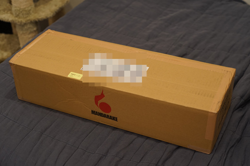
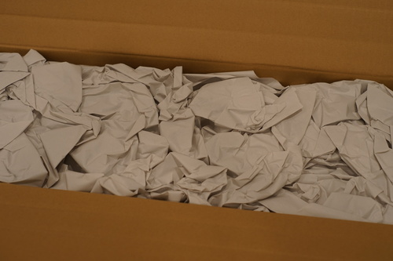
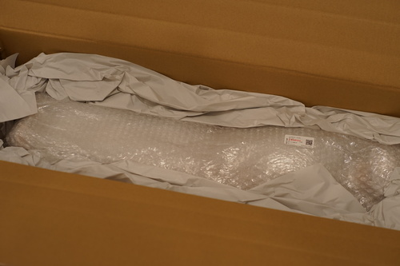
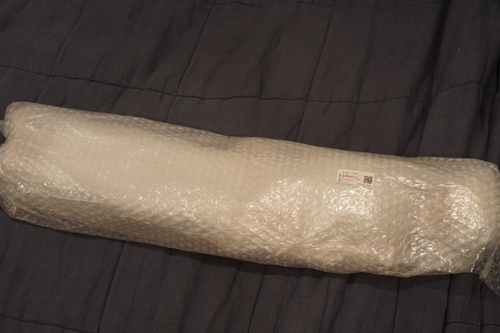
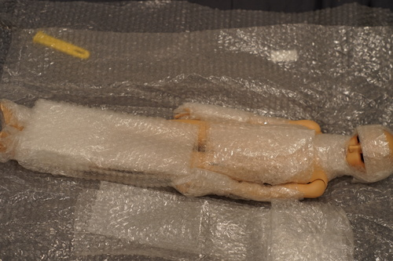
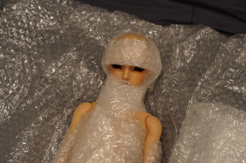
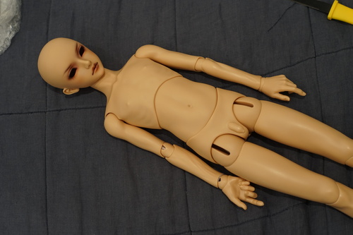
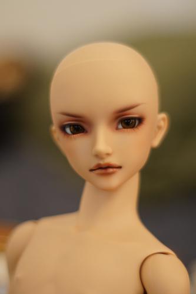
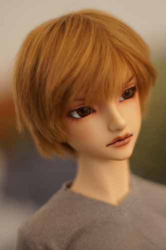

Surely you all remember quite well that I fell in love with F-101 after the F-100 contest back in 2021. I remember watching his designer, Momiji, getting excited to order one and having to decide between entering for Sapphire and waiting for F-101 or ordering F-101 immediately. I was so excited for him to eventually make it to Online FCS in 20 years!
A while ago, I decided to get him in tan and also make him my little domestic terrorist. I started developing Santi more in the last few months and was getting a little more impatient for F-101 to show up in the USA FCS an started playing with the idea of going to Kyoto and borrowing someone's address. I was willing to buy a used one, but I really wanted this boy in tan. They pop up once in a while but I hadn't caught one in the right color for the right price.
About 2 weeks ago, I was laying in bed and checking my phone instead of sleeping and saw a TAN F-101 was on Mandarake with the cart button still enabled! I clicked the listing and it said sold out... I was a little bummed but I knew I could wait.
A few days after this Terrible Event That I Would Live Through, I woke up again too early and was checking Mandarake, as usual. The same tan F-101 listing was reposted! I jumped out of bed and ordered him as fast as I could.
He arrived a few days later. I had a bit of dread opening his box. Mandarake requires you to record a video of the box opening if you want help with any issues, so I wasn't very excited... I set up my phone for the video and did it anyway!!

The box was taped with two different types of tape. Paper tape on the bottom and a plastic tape on the top. I thought he had been opened but I didn't see any of the paper tape under the plastic tape.





He did not arrive with a face protector, but I didn't see any damage that wasn't in the listing. They did not skimp on bubble wrap.

This is my first doll in sunlight and the color is very lovely!

His faceup has some small sealant damage that was in the listing description. He looked very clean otherwise. There were just a few dark marks on his heels.
His lips are overlined a lot! I plan to repaint him at some point (and also damage his faceup myself on accident), so the sealant damage doesn't bother me much. This faceup is pretty though. Volks did a nice job on him. It'll hurt to wipe when I decide to!

He's wearing Liam's wig and Liam's clothes temporarily. He looks too much like a millenial skater!!! I hope I'll turn him into his own zoomer self soon. I'm thinking oversized techwear next time I have access to my sewing machine. I'll try very hard not to give him blonde hair and blue eyes... I thought he looked very cute in Hina's extra tea rose eye though so maybe I'll be able to stop myself.
Bonus info: He came on B-02 with A-02 arms and B-04 legs. He has H-07 and FO-01.